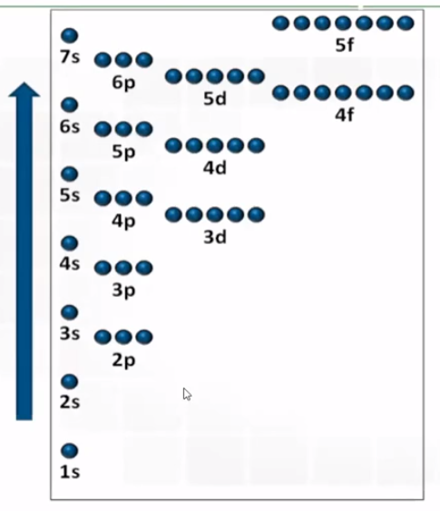
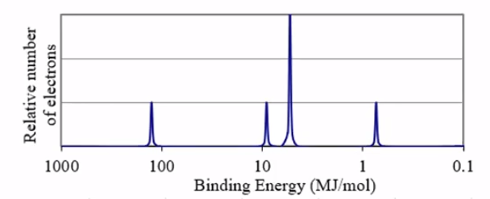

In atoms and ions, electrons exist in "energy levels" and the "subshells" within them
1s^2^
1 is the energy level (1, 2, 3, 4, ...)
s is the subshell (s, p, d, f)
2 is the quantity of electrons in the subshell (1, 2 for s, 1 to 6 for p, ...)
Aufbau Principle:
{width="3.3645833333333335in" height="3.90625in"}
How to know the fill orders?
<!-- -->
What is Photoelectron Spectroscopy?
Determines the relative energies of electrons in atoms or ions
Process:
Radiation (high energy) is used removes electrons from an atom
Radiation in visible or ultraviolet range for electron emission
Infrared radiation to study chemical bonds
Microwave radiation to study shapes of molecules
Electrons are located in different energy levels and subshells
Valence electrons (outermost shell) are easier to remove
Core electrons (inner shells) are harder to remove
{width="6.395833333333333in" height="2.59375in"}
The height of the peak is the relative amount of electrons in the subshell
<!-- -->
The x-position of the peak is the binding energy (energy required to remove the electrons)
Left-most peak is usually the closest on to the nucleus
The number of electrons can be known by adding up all the peaks
2 + 2 + 6 + 2 = 12 electrons